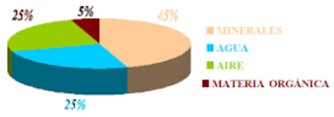
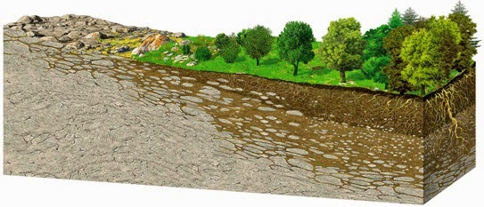

FA_UD3_El suelo
FUNDAMENTOS AGRONÓMICOS
UD 3
EL SUELO
EL SUELO
El suelo es un factor muy importante para el desarrollo de la vida y en nuestro caso, para la obtención de unas correctas producciones agrícolas, forestales o ganaderas.
Propiedades
El suelo es una capa de material delgada y a menudo frágil, que recubre la parte externa de la corteza terrestre en ella se desarrollan las raíces de las plantas.
Está constituido por tres fracciones:
- Fracción Sólida: materia orgánica en descomposición y elementos minerales (arcilla, limo, arena, etc.). Ocupa el 50 % del suelo en volumen, correspondiendo un 5 % a compuestos orgánicos y un 45 % a compuestos minerales.
- Fracción Líquida: es el agua que hay en el suelo. Ocupa parte de los espacios que existen entre las diferentes partículas de la fracción sólida. Cuando un suelo está inundado todos los espacios están ocupados por el agua, no habiendo espacio para el aire. Su contenido en el suelo es del 25 %.
- Fracción Gaseosa: es el aire existente en el suelo. Ocupa los poros que no están ocupados por el agua. Su contenido en el suelo es también del 25 %.
{width=50%}
Las funciones más importantes que tiene un suelo son:
- Servir de anclaje para el sistema radicular de las plantas.
- Almacenar temporalmente parte del agua que está en el suelo y ponerlo a disposición de la planta.
- Aporta la aireación necesaria para que las raíces de las plantas se puedan desarrollar.
- Proporciona los nutrientes minerales que las plantas necesitan para su correcto desarrollo.
Origen y formación
El punto de inicio para la formación del suelo o edafogénesis es la roca madre. Esta va a sufrir una serie de procesos, que la transformará total o parcialmente; suele comenzar con la ruptura de dicha roca en pequeñas partículas que nos darán los materiales del suelo. Estas transformaciones son muy lentas.
Los geólogos clasifican las rocas en tres grandes tipos: ígneas, sedimentarias y metamórficas.
- Rocas ígneas: son el material básico de la corteza terrestre, se han creado por el enfriamiento de los materiales fundidos de las profundidades de la tierra. El granito es una roca ígnea.
- Rocas sedimentarias: se forman cuando el aire, agua, u otro agente depositan materiales, sedimentos, procedentes de la alteración en superficie de otras rocas, en las concavidades de los terrenos. Posteriormente estos sedimentes sufren proceso de compactación y cementación. Un ejemplo de rocas sedimentarias son las rocas calizas.
- Rocas metamórficas: cuando a cualquier tipo de roca se le somete a altas presiones o temperaturas parte de sus minerales sufren transformaciones que originaran un nuevo tipo de roca. Un ejemplo característico son las pizarras y mármoles.
La formación del suelo depende de cinco factores:
La naturaleza de la roca original: Dependiendo de la composición inicial de los minerales que la forman, se realizará un tipo distinto de meteorización o descomposición de las rocas. Según estos materiales iniciales, tendremos las distintas propiedades físicas y químicas de los suelos.
El clima: Influye directamente mediante la humedad y la temperatura e indirectamente mediante ella vegetación. Sin temperatura y humedad no se puede formar suelo. El clima es el principal agente de alteración química del suelo (meteorización química) y de la fragmentación física (meteorización física).
El relieve del terreno: Condiciona el desarrollo del suelo en cuanto a profundidad y drenaje. Los relieves escarpados dan suelos sueltos y poco profundos y los relieves más moderados (valle) dan suelos más profundos.
Los seres vivos: Condicionan los procesos químicos y físicos del suelo favoreciendo su fertilidad. La vegetación es clave en la formación del suelo por su acción de meteorización (musgos, líquenes, raíces…) y porque constituyen la principal fuente de materia orgánica del suelo. Los animales que viven en el suelo constituyen lo que se llama la fauna del suelo, son los responsables de la alteración de la materia orgánica y de su mezcla con el mineral del suelo. La vida sobre y dentro del suelo incide directamente en su formación.
El tiempo: Los procesos de formación del suelo son largos y su duración determina su cantidad y profundidad. Los suelos más antiguos son los que poseen mayores espesores y, por el contrario, los suelos más jóvenes son los de menos profundidad.
Todo suelo se origina a partir de una roca sólida, estos procesos de formación del suelo son largos.
El clima y las plantas son fundamentalmente los agentes trasformadores que convierten a la roca, en una pequeña capa de partículas fracturadas con alguna mezcla de materia orgánica en ella. A este proceso se le llama meteorización.
Se suele distinguir dos tipos de meteorización:
La meteorización física: se caracteriza por la fragmentación de la roca sin cambiar los minerales que la forman. Los factores determinantes son el agua, la temperatura y el viento. Un ejemplo es la meteorización producida por el aumento de volumen que se produce en el agua cuando se congela, el agua al quedarse retenida en las grietas de la roca madre y congelarse por la presencia de bajas temperaturas hacen que se parta. Otro ejemplo es la dilatación y contracción que sufre una roca por el calentamiento y enfriamiento de su superficie debido a la oscilación térmica. La lluvia y el viento al golpear la superficie de la roca también generan erosión.
Podéis visualizar esta publicación
La meteorización química es la que altera la composición de la roca y la rompe. El proceso más simple es la solución. El agua de lluvia tiene un pH neutro y puede disolver lentamente los minerales de la roca, por otro lado se sabe que a veces la lluvia tiene un pH más bajo de lo normal “lluvia ácida” que acelera bastante más estos procesos.
Los organismos vivos de un suelo (microorganismos, hongos, líquenes, plantas, animales, hombre, etc.), favorecen la meteorización química y física.
{width=50%}